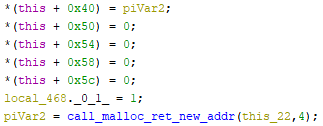

TODO: Edit Appendix
Since rw.dll is a library, it cannot be run directly. In order to debug
authentication_1 and examine the memory dump, I have created a wrapper
program. This program tries to call a library exported function as follow:
rw.dll)authentication_1)authentication_1, there are 4)In debugger (x32dbg/OllyDbg), set a breakpoint in main and start stepping
over instructions. When the program loads the rw.dll, the entry function
is called in the library which does several initialisation and calls constructors.
One of the constructors (0x10012430) is a global class located in 0x10073ed8.
This class is used throughout the library and will be discussed later.

A snippet of the constructor
After that, the wrapper gets the address of authentication_1. This is achieved
by looking up the exported functions table from rw.dll. Then, type-cast the
address to a function that takes 4 arguments.
c
typedef void (__cdecl *pFunIIII)(int, int, int, int);
// [...]
HINSTANCE hGetProcIDDLL = LoadLibrary(TEXT("rw.dll"))
FARPROC procAddr = GetProcAddress((HMODULE) hGetProcIDDLL, "authentication_1");
pFunIIII func = (pFunIIII)procAddr;
// [...]
func(param_1, param_2, param_3, param_4);
The code can be found in Appendix … TODO: Edit Appendix
At a later stage of analysis, this wrapper program is not sufficient to examine
the function. authentication_1 has a lot of function calls within functions.
It is not time efficient to analyse a particular function from the beginning,
especially when the function is deep (i.e. it is being called after several jumps).
Hence, I modified the wrapper function to not only calls exported function, but an
address. Given an address, the wrapper can directly calls it.